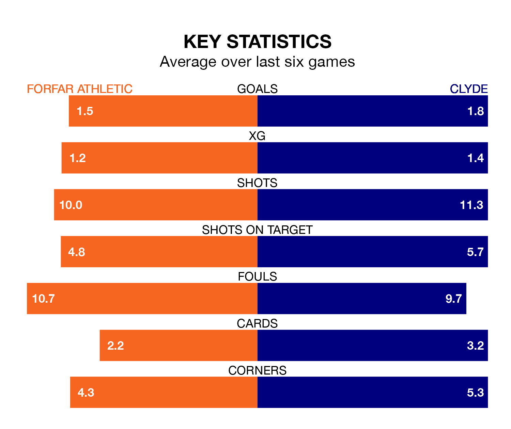

Struggling Clyde face Forfar Athletic away at Station Park on Saturday looking to build on a win in their last league outing.
After securing all three points with a 2-1 victory over Elgin City on March 2, the Bully Wee sit bottom of League Two.
They travel to play a Forfar side sixth in the standings, who were held in their last match, 0-0 against Stranraer.
With Marc McCallum between the sticks, Forfar can rely on one of the league's safest pair of hands. He has kept 10 clean sheets in his 27 appearances this season, and only one other 'keeper – Stenhousemuir's Darren Jamieson – has been able to prevent the opposition scoring on more occasions in League Two.
In Clyde's net, Jack Leighfield has one clean sheet in 19 games. He has conceded a goal every 48 minutes, 60% more often than the 78 minutes between goals for McCallum.
In the last 10 years, Forfar and Clyde have played each other on 13 occasions. Forfar won six of them, Clyde two, and they drew five times.
On average, the Loons scored 1.4 goals and the Bully Wee 1.1 in those matches.
Their last meeting was on February 20, when Forfar won 2-0 away.
With 29 goals in 27 games so far this season, Athletic are the league's second-lowest scorers with 1.1 goals per game. But they are conceding fewer than average too, letting in 32 goals at a rate of 1.2 per game.
The Bully Wee, meanwhile, are average scorers, with 1.3 goals per game. They have conceded 1.8 goals per game.
The Loons are in mixed form in League Two, with two wins and four draws from their last six games.
With three wins and a draw over that period, the away team's form is similar – they have both taken 10 points from 18.
Updated: 09:34 (UTC), 08/03/24